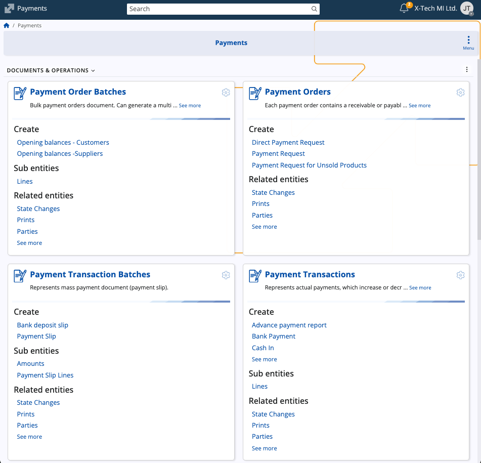
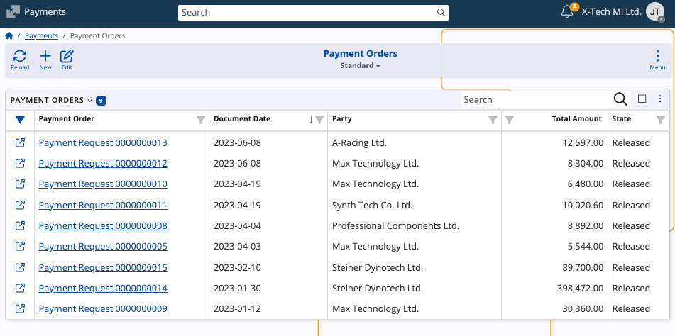
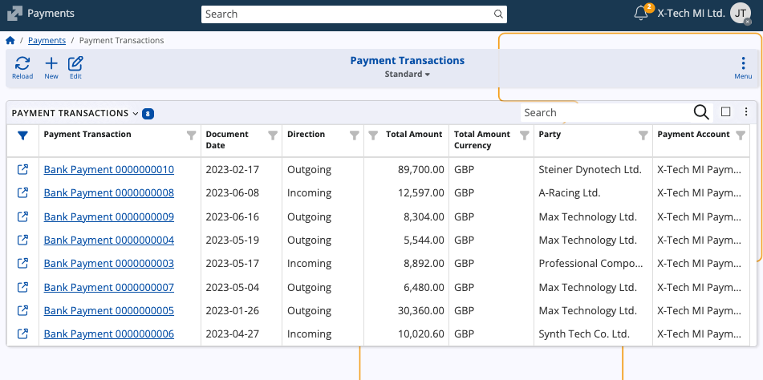
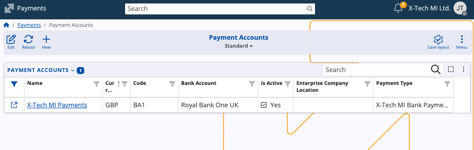
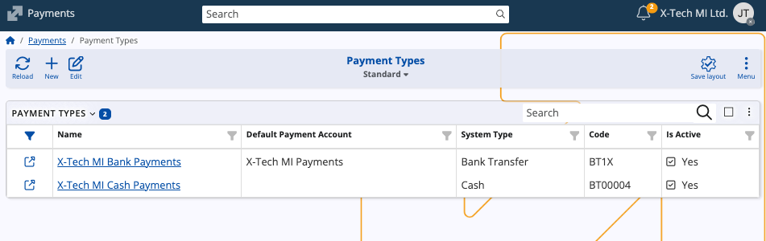
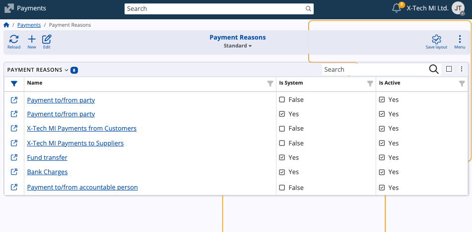
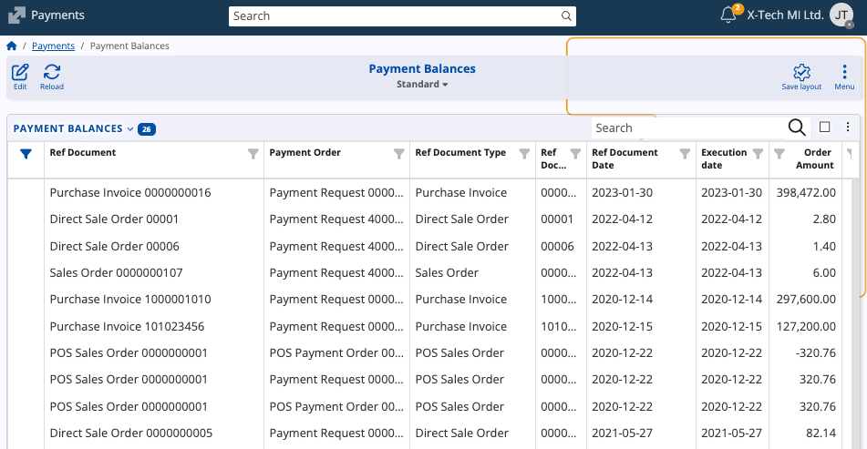
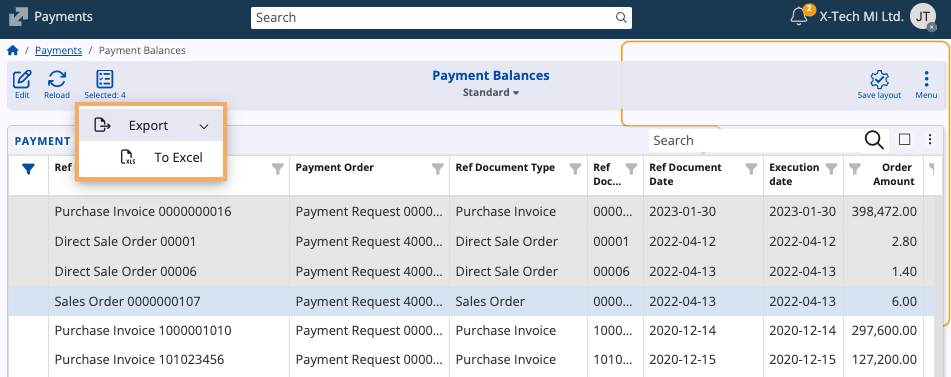

Payments
The Payments submodule in ERP.net provides functionality for managing financial transactions between an enterprise and its business partners. It encompasses the complete cycle of recording, processing, and tracking payments — from payment requests and execution to reconciliation and reporting.
Payments enables enterprises to maintain clear visibility over their payment operations, ensuring accurate accounting, traceability of cash and bank transactions, and compliance with internal and external financial requirements.

Structure
The Payments submodule centralizes all financial movements involving cash, bank accounts, vouchers, and other payment methods. It supports both incoming and outgoing payments and maintains a structured record of all related documents.
Payments are categorized by type and linked to payment accounts.
The main sections are:
- Documents & Operations: Payment Orders, Payment Order Batches, Payment Transactions, Payment Transaction Batches, Transfers
- Definitions: Payment Accounts
- Setup: Payment Types, Payment Reasons
- Reports & Ledgers: Payment Balances
Each section provides tools for managing a specific aspect of enterprise payments, from document creation to financial reporting.
Payment Orders
Payment Orders represent formal requests for executing payments within an organization. They can originate from various internal or external sources, such as suppliers, employees, or customers.
The system supports several order types, including:
- Direct Payment Request
- Payment Request
- Payment Request for Unsold Products

Each payment order may lead to one or more Payment Transactions upon execution, linking the order to actual financial movement.
Payment Order Batches
These are bulk documents used to generate multiple payment orders at once, typically for opening balances for customers or suppliers.
Payment Transactions
Payment Transactions represent actual financial movements — such as payments, receipts, and cash operations. Each transaction records the direction, total amount, party, and related payment account.
Common document types include:
- Advance Payment Report
- Bank Payment
- Cash In
- Cash Out
- POS Payment

Common fields
| Field | Description |
|---|---|
| Direction | Indicates whether the transaction is Incoming or Outgoing. |
| Party | The business partner involved in the payment. |
| Payment Account | The payment account used for the transaction. |
| Payment Reason | The purpose of the payment, e.g. “Payment to/from party.” |
| Payment Type | The mode of payment such as cash, card, or bank transfer. |
| Requires Allocation | Indicates if the transaction must be allocated to a specific order or invoice. |
Payment Transaction Batches
These are used to group payment documents of the same nature, simplifying processing and reconciliation.
Two main types are supported:
- Payment Slip – Represents grouped cash payments.
- Bank Deposit Slip – Represents grouped bank transactions.
Transfers
Transfers record internal financial movements between the enterprise’s own payment accounts — for example, transferring funds from a cash account to a bank account.
Payment Accounts
Payment Accounts represent the financial accounts used for payments — such as bank accounts, petty cash, or internal accounts.
Each payment account can participate as either Source or Destination in internal transfers.

Payment Types
Payment Types define the modes through which financial transactions are carried out. Examples include:
- Cash
- By Card
- Bank Transfer
- Coupons
- Check
- Vouchers
- Packaging
- Internal Usage
- Other

Payment Reasons
Payment Reasons describe the underlying purpose for executing a payment transaction.
They are used to categorize and standardize payment entries.

Payment Balances
The Payment Balances report provides a summarized view of payment-related documents, their corresponding amounts, and statuses.

You can export a report for further analysis by selecting one or more reference documents from the table and hitting Export from the toolbar.

See also
Note
The screenshots taken for this article are from v.26 of the platform.